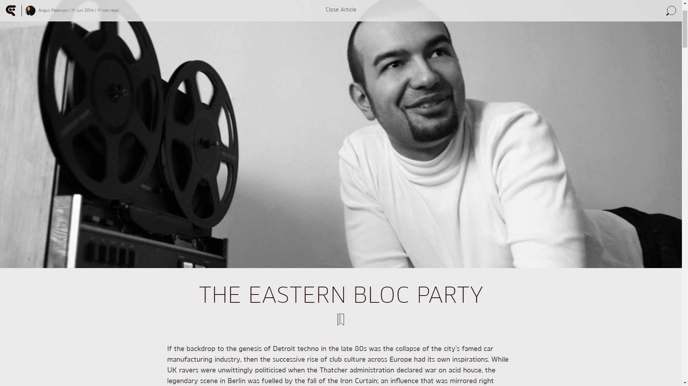

The Eastern Block Party
{kind=link}

If the backdrop to the genesis of Detroit techno in the late 80s was the collapse of the city’s famed car manufacturing industry, then the successive rise of club culture across Europe had its own inspirations. While UK ravers were unwittingly politicised when the Thatcher administration declared war on acid house, the legendary scene in Berlin was fuelled by the fall of the Iron Curtain; an influence that was mirrored right throughout Eastern and Central Europe.
The narrative of how Berlin grew into a techno mecca is a powerful one; beginning with a ‘big bang’ with the fall of the Berlin Wall at the end of GDR-era, with the desolate, empty buildings and warehouses in the city’s East transformed into euphoric havens of blossoming club culture. So it’s not too surprising that other countries east of the Iron Curtain have their own stories to tell, of early scenes that grew from the huge political and social changes of the 90s. Earlier this year, Bulgarian producer KiNK released his debut album Under Destruction. While initially he’d planned a straightforward collection of dancefloor cuts, the album evolved into a somewhat cerebral exploration of early electronic music in his hometown of Sofia. Though it’s a story rarely told, it’s one that can rival the iconic beginnings of Detroit and Berlin; a riveting history where music, technology and Soviet-era politics collide.
“...it’s a story of a political situation I’ve grown up in..."
“It’s a story of my town, it’s a story of my neighborhood, it’s a story of a political situation I’ve grown up in. The time when I found electronic music was just after the change from communism to democracy, so it definitely affected my way of living, and of course my way of making music.”
The album’s artwork depicts the desolate concrete blocks of Shenzen; the perfect visual backdrop for dystopian science fiction, and also the place where Strahill both grew up and recorded Under Destruction. He told DJBroadcast that he chose to release the album through Berlin-based Macro Records, instead of the larger labels that had also expressed interest, for the sake of having the story told with clarity. Macro’s founder Stefan Goldmann has a mixed German and Bulgarian background, and split his early years between Sofia and Berlin. Goldmann paints the narrative of the album in in loving, irreverent detail in his essay A Sofia Story.
“Now here’s a little history of late communist electrification and its unexpected transformations before it erupted onto the dancefloors of the world… Science on the edge of disaster, party excess and the architecture of brutalism were equal influences in early post-socialist techno.”
Bulgaria offers the perfect illustration of electronic music as an artform driven by technology. The genesis of its electronic music scene arguably occurred in Japan back in 1978; Todor Zhivkov had ruled as the country’s communist dictator since 1954, and during a diplomatic visit to Japan, was deeply impressed by the country’s formidable technological advancements. Inspired to act immediately upon returning home, he established Bulgaria as a key supplier of the computer industry across Eastern Europe, as part of the COMECON trade network that had been established between the Soviet Union and its Eastern Bloc allies in 1949.
At its peak, the modest socialist country was employing 300,000 workers to supply US$13.3 billion worth of technology annually for Soviet-allied countries; accounting for approximately 40 percent of the computers in the Eastern Bloc. The iconic ‘Pravetz 82’ was the first computer produced on a mass scale under the socialist industry, and essentially was a hacked and reproduced Apple II system.
Bulgaria's status as the technology hub of the Eastern Bloc later made it a perfect fit for electronic music. During the 80s, the country’s highly skilled engineers and IT scientists were taking apart computers and recreating them as Soviet-ready hardware, in the 90s their children were using these same computers to “backwards engineer” early electronic music itself; recreating German techno and UK jungle with a gritty Eastern European spin.
De(con)structing Bulgaria’s legacy
Goldmann proved a solid ally for Velchev in telling the story of Under Destruction; a regular media commentator in the German media on topics of music and culture. He says the key element for Bulgaria’s early clubbing culture was having the likes of the ‘Pravetz 82’ in schools.
“The country decided in the 80s it was a good idea to have kids educated in programming. Even the generation now aged 30 to 40, they had this in school. The whole process of digitization and the internet, it just came so naturally to people. Even with MP3s, in other parts of the world it was treated as something that might happen one day; but in Bulgaria it happened super early.”
This is coupled with an unfortunate, and indirect source of creative inspiration: genuine economic misery. Bulgaria experienced hyperinflation during the 90s as it made a rocky transition into democracy, impoverishing many when they lost their life savings.
“So the music production didn’t go down the route of what was happening in Germany, where you’d buy a sampler and a synthesizer, and an Atari computer with Cubase installed… it’s a specific thing about former socialist countries, it wasn’t a matter of money whether you could buy hardware like a Roland 303; you just couldn’t. All they had was the PC. So they would just take any freeware or hacked software they could get, just to play around with the production.”
Married with this was the genuine cultural tendency of “backwards engineering” that had been passed down from their IT industry parents, and absorbed into the wider society. Heavy metal bands who were trying to sound like their favorite Manowar record wouldn’t be able to afford distortion pedals; so instead, they’d construct alternatives from radio parts. Meanwhile, KiNK and his Porno BPM crew were trying to emulate the music they loved, just with what they had.
“The link is just cultural,” says Goldmann. “They might hear an acid sound they really liked, and wondered ‘how do we make it sound like that’. So they’d take some old Russian synthesiser, and start circuit bending it. They’d still fail, and end up with something sounding different.”
"...It was the soundtrack of 'urban decay, dilapidated industry and nuclear apocalypse'..."
In that nature of breakneck speed of electronic music’s evolution, and in the fashion of a snake devouring its own tail, the inspiration eventually spun off in new directions. “It’s like the guys today who want to sound exactly like Chicago in 1998. They go on eBay and seek out the original gear, though if it’s not available or they can’t afford it, they end up buying something else, and it deviates from the original a little. Eventually the deviation becomes individualisation. That’s typical for a producer like KiNK. Listening to his sound you might think yeah, I’ve heard that element somewhere, but at the same time it goes completely in its own direction. It has some reference point where it sprang off at some stage.” Another reason that the harsh early sounds of techno resonated with Bulgaria’s youth was that it reflected the harsh environment they lived in; the desolate concrete blocks, the dreams of hope slowly being eroded, and anxieties around their own nuclear industry following the disaster of Chernobyl. It was the soundtrack of “urban decay, dilapidated industry and nuclear apocalypse,” as Goldmann put it in A Sofia Story. However, this is distinguished from the energy of relief and freedom that accompanied partying among the desolate buildings of Berlin’s early scene.
“The difference is that in East Berlin, it was always something temporary. Investors were there immediately after reunification to start rebuilding, it just took some time. Nobody expected to be able to be running a party in a squat forever. In Sofia, people looked forward to a bright future after the end of communism, though things happened quickly to change that outlook. Very early on, people realised it wasn’t really going towards the progress we expected. The desolate environments had a sense of permanence, which is nothing you could say of Berlin.”
Bleakness and early techno in Bucharest
This bleak outlook is something that also defined the early electronic music scene in Romania, which just as much as Bulgaria, existed on the fringes of access. The country’s explosive revolution in 1989 saw dictator Nicolae Ceauşescu executed after 25 years of rule. However, turbulent political, social and economic conditions followed throughout the 90s.
“I think a lot of the people working in electronic music during the late 90s, viewed themselves as part of the lost generation,” says Cosmin Nicolae AKA Cosmin TRG, the now Berlin-based producer who grew up in the capital city of Bucharest.
“It was this weird transition time where there was the feeling you were on the brink of something, which never quite eventuated. You would have all this knowledge and information, but not everything would be available, so you’d need to find your own way around. This was true with everything stretching across music, arts, culture, politics, lifestyle… You would have a certain access, though never full. So it created this strange mindset.”
Romania also shares parallels with many of the other places where techno took hold in the 90s, in terms of it reflecting the urban decay of the immediate environment. For Cosmin, it was rawness of early club music that resonated.
“It just made sense to me, and people around me. You had the industrial estates in the UK for example, the ghettos of Bristol and Manchester and those places. That translated very well into Eastern Europe, because it was one big post-industrial estate. For me, that was it. The sense of imminent doom, it was there. That made sense to me.”
“...It was this weird transition time where there was the feeling you were on the brink of something, which never quite eventuated..."
Like Bulgaria’s early enthusiasts, Romania circumvented the tyranny of distance via an early culture of piracy. Also like Bulgaria, the extravagances of a Roland 303 or 909 were simply out of reach. However, without that country’s deeper cultural tendency of backwards engineering, access was throttled prior to the proliferation of software solutions. While Cosmin namechecks the early rave excursions of cult act Șuie Paparude, he says the creative side didn’t really pick up speed until later in the decade.
"I got into creating music around the mid to late 90s, around the time everyone was moving towards digital. You have loads of companies making plugins emulating hardware equipment. By that point, it was funny to see hardware in somebody’s studio, as it was like this quaint thing from the past. But this movement made things a bit more democratic. I wouldn’t have been able to start making music otherwise; even computers themselves were still quite expensive.”
The defining aesthetic of early electronic music emanating from Romania? Cosmin nominates ‘sarcasm’, a defensive stance adopted in the face of continued harsh conditions.
“Music videos from Aphex Twin and Orbital were on rotation during the day, so electronic music wasn’t necessarily alien. Producers would take elements and put their own spin on it. It was partly inspired by the Ninja Tunes ideal of using samples, they’d draw on local culture with these weird samples from folk tunes, children stories, snippets from political speeches… it would sound familiar, but also very twisted. It was a fun time, it was interesting.”
"...If we’re looking for evidence of the harsh realities being reflected in the music styles, that was more the case with other smaller cities in Serbia..."
Clubbing in the former Yugoslavia
Serbia, as part of the former Yugoslavia, broke away from Soviet influence in 1948 to become a non-aligned nation that formed its own path to socialism under the leadership of Josip Broz Tito; reflected in a more open attitude to music that saw club culture existing in some form since the late 60s and early 70s. There was a strong tendency towards alternative music in general, with strong subcultures developing in the 80s, with, for example, club Akademija taking a leading role in Belgrade’s nightlife. These were all seeds for the particularly legendary techno scene of the 90s.
Belgrade enjoyed arguably the most thriving clubbing scene across eastern and central Europe; though it was also set amongst some of the most turbulent political and social conditions. The attempts by Serbian leader Slobodan Milošević to control wider Yugoslavia meant the decade was dominated by war; after a swift rise of nationalism late in the 80s, war broke out throughout the region in 1991, which had the subsequent effect of suffocating the music movements in Serbia, as economic sanctions hit hard and the country was isolated internationally. Amongst this turbulence, the legendary Club Industria opened its doors in 1994. In the fashion of iconic clubs that co-opted and transformed existing spaces, it was set in the basement of a large Belgrade bookstore, and was pushing a cutting-edge mix of acid house early techno from its early days. Serbian DJ veteran Vlada Janjicwas already a rising name in the Belgrade underground by the time the club opened, and says it was pivotal in the city’s revitalisation, after the wars across Croatia, Bosnia and Herzegovina had taken their toll. “The scene’s growth at that point was really fast, and Industria became the focal point of the whole rave phenomenon in Serbia,” he told DJBroadcast. “Although the scene started out mainly as a form of escapism… by the time peace returned in 1995, Belgrade already had a strong scene with many clubs, and one-off raves with artists like The Prodigy and Laurent Garnier.”
Just as the former Yugoslavia had a political climate that was distinct from its neighbouring Eastern Bloc countries, it later had a clubbing scene that also stood apart.
“Early DJs were pushing trance and Detroit techno, and other clubs US garage and deep house, funk, soul, acid jazz... Belgrade was diverse. If we’re looking for evidence of the harsh realities being reflected in the music styles, that was more the case with other smaller cities in Serbia, where techno and fast BPMs were the leading soundtrack of the party.”
The enigma of Belgrade’s early movement
Miloš Pavlović, AKA Regen, is one of Europe’s many techno stalwarts who made a home for himself in Berlin, though he says his heart still belongs in Belgrade. Part of the generation of DJ/producers that followed in the steps of Vlada Janjic, he was barely in his teens when the scene was taking off in his home city, though he says it continues to resonate with him to this day, with the openness and vibrancy scene suggesting shades of early UK-style acid house PLUR.
“I think Belgrade at this point was something very special for this region. I remember the first party I went to, I was so amazed by the vibe, and how everybody was so free. I was only a kid at the time, just 14 years old, but I never felt that I was not accepted. And that was the movement… people really felt free, and could be whatever they wanted to be.”
Pavlović made his first appearance behind the decks at Industria in 1998. This was also the year the Kosovo War began, which saw the brutal repression of that country’s majority Albanian population by Serbian forces. When Milošević rejected a US-brokered peace plan in early 1999, it signaled the start of the 78-day bombing campaign that led to the eventual withdrawal of Serbian forces from Kosovo.
For Pavlović, who’d lived through Serbia’s economic hardships during the 90s. the NATO bombardment represented the time, “when I actually saw how things were so fucked up.” Industria stayed open the whole time; creating the most evocative image of Belgrade’s clubbers continuing to dance as bombs dropped from the sky all over the city.
“...I think Belgrade at this point was something very special for this region..."
Red Bull Music Academy tackled the subject of Belgrade’s early movement last year, and drew a direct link between Club Industria, and the Otpor student movement that was a key player in bringing down Milošević in 2000; describing its ranks as “restless, creative spirits who popped pills on weekend nights. For many of them, Industria was the meeting point, a breeding ground if you wish, which could have turned your every all-nighter into an act of political resistance.”
To a certain degree, music and politics in Serbia have undeniably been intertwined; the country’s iconic Exit Festival in Novi Sad was originally formed in 2000 in protest against the Milošević regime. However, Pavlović disputes the notion that Belgrade’s early scene was about politics; it was more a place where these hardships of politics could be escaped.
“One of the reasons I’m still in music is because of the movement. The movement is still in me. This was the peace that I subconsciously found for myself in this crazy situation.”
However, he says the movement was also marked by a drastic decline after the conclusion of the war; with Industria closing and an increasing presence of corporate sponsors in a commercialised party scene; as well as many ultimately deciding to leave the country.
“Many who left Belgrade had a certain quality, and were looking for something better. When you dedicate your whole life to your career and you don’t get anything back from that… it’s normal that people leave and try to look for a better quality of life.”
Overcoming obstacles to connect
The thread that’s common across the early clubbing scenes of Eastern Europe is the notion of overcoming obstacles – economic, social, political –to participate in a cultural movement that was taking hold worldwide. To a degree, in the days before digital distribution brought the global barriers down even further, these obstacles did hinder the countries from making a mark in terms of a seminal, and distinct creative contribution in the early days.
“The club culture here was more about consuming it, rather than creating anything particularly local, like the early techno scene in Detroit or Berlin for example,” Vlada Janjic says of Serbia’s early days. “It was about individuals, their efforts and their focus. We had many good parties, and many producers too, just not too many with significant international careers and success.”
Similarly, Stephan Goldmann says that it was after 2000 in Bulgaria that a generation of producers began to make their name in the dance music underground. However, in spite of this late start, the unique political conditions of the region shone through in their later contributions. Goldmann points to KiNK’s renowned improvisational approach to his live performances as an example of where Bulgaria’s cultural heritage can be located.
“A lot of electronic artists might feel more comfortable in the studio, where they can take their time in shaping their sound. But with an artist like KiNK, he can take one look at a piece of hardware or software, have an immediate idea of what it does, and then be able to interact with it in an improvisational fashion… almost like a jazz musician. That’s why he’s gifted in live performances. It just comes naturally to him, it’s a specific skillset that enables him to do that.”